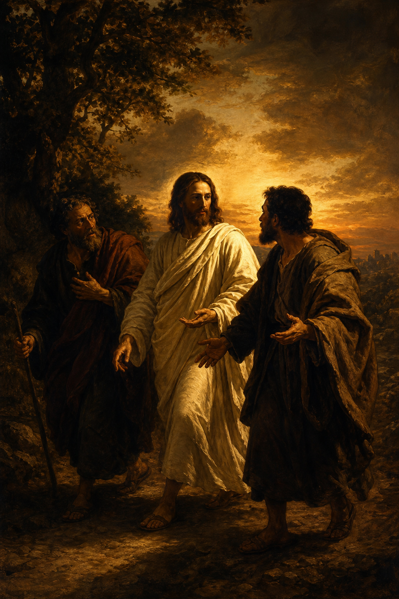

New Testament · Book 3 of 27
Luke
A careful physician writes the most detailed and far-reaching account of Jesus ever composed, giving a special place at the table to the poor, the outcast, the sinner, and the woman society forgot.
Writing as a historian and physician for a Gentile audience, Luke traces Jesus's life "in order," from the angel's visit to Mary through the resurrection, with special attention to women, the poor, Samaritans, and sinners whom other accounts pass over.
For the Son of man is come to seek and to save that which was lost.
What happens in Luke
Luke opens with the longest and most tender nativity narrative in Scripture, the angel Gabriel's announcements to Zechariah and Mary, Mary's song of praise, the shepherds summoned by angels to a manger, and the boy Jesus astonishing teachers in the temple. As Jesus begins his public ministry in Galilee after his baptism and wilderness temptation, Luke shows him constantly reaching toward the margins, dining with tax collectors, touching lepers, forgiving a sinful woman who weeps at his feet, and telling parables found nowhere else in the Gospels: the Good Samaritan, the Prodigal Son, the Rich Man and Lazarus, the Pharisee and the Tax Collector. Jesus commissions the seventy, teaches his disciples to pray, and sets his face resolutely toward Jerusalem, knowing what awaits him there. In the city he cleanses the temple, teaches daily, and warns of coming judgment before sharing a final Passover with his disciples, instituting what the church will remember as the Lord's Supper. Betrayed by Judas, denied three times by Peter, and tried before both Pilate and Herod, Jesus is crucified between two criminals, extending forgiveness and paradise even from the cross. The Gospel closes with the empty tomb, the risen Christ walking unrecognized with two disciples on the road to Emmaus until he breaks bread with them, his appearance to the gathered disciples in Jerusalem, and his ascension into heaven as they return with great joy to praise God continually in the temple.
Why it matters
Luke's deliberate inclusion of women, the poor, and social outcasts shapes how the church understands the reach of the gospel, that it is for everyone, not only the respectable or the religious insiders. Its parables remain among the most quoted and beloved teachings of Jesus, and its portrait of a Savior who weeps, prays, and seeks out the lost gives the fullest human and compassionate face to the person of Christ found in any Gospel.
Jump to a chapter
Luke has 24 chapters — select one to begin reading there.